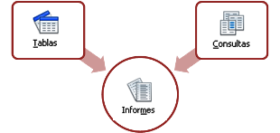

4.3. Informes
Vista de informe
Importante
Un informe es un objeto de una base de datos que permite la presentación de los datos en la vista de impresión.
Igual que un formulario, un informe puede realizarse con los datos de tablas o consultas.
Sin embargo, un informe se ejecuta sobre los datos actuales de la base de datos, siendo, por tanto, un objeto para mostrar datos. No permite la modificación ni la introducción de nuevos registros. Esta es la diferencia con los formularios.
Datos de origen de un informe. Creación propia
Los informes solamente se pueden crear mediante el asistente.
Aunque una vez creados se pueden editar sus elementos, no se puede cambiar sustancialmente su estructura.
Creación de informes
Comprueba lo aprendido
Para saber más
Un informe muestra los datos almacenados en una tabla o consulta. Por tanto, su contenido cambia cuando se ejecuta.
¿Crees que hay alguna forma de guardar unos datos instantáneos en un informe?
Consulta los términos informe estático y dinámico en la ayuda de OOo Base en el apartado informes→crear.